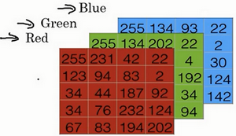
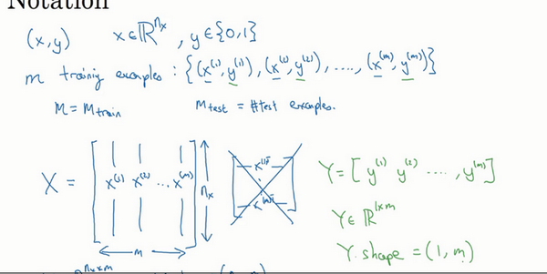

神经网络基础
当实现一个神经网络的时候，需要知道一些非常重要的技术和技巧
例如有一个包含m个样本的训练集，很可能习惯于用一个for循环来遍历训练集中的每个样本 但是当实现一个神经网络的时候，通常不直接使用for循环来遍历整个训练集
在神经网络的计算中，通常先有一个叫做 前向暂停 forward pause 或叫做 前向传播 foward propagation 的步骤，接着有一个叫做 反向暂停 backward pause 或叫做 反向传播 backward propagation 的步骤
也会介绍为什么神经网络的训练过程可以分为前向传播和反向传播两个独立的部分
接下来将使用 逻辑回归 logistic regression 来传达这些想法，以使能够更加容易地理解这些概念
二分类
逻辑回归是一个用于 二分类 binary classification 的算法
首先从一个问题开始说起，这里有一个二分类问题的例子 假如有一张图片作为输入，比如这只猫，如果识别这张图片为猫，则输出标签1作为结果 如果识别出不是猫，那么输出标签0作为结果
现在可以用字母 y 来表示输出的结果标签，如下图所示：

接下来来看看一张图片在计算机中是如何表示的，为了保存一张图片，需要保存三个矩阵，它们分别对应图片中的红、绿、蓝三种颜色通道，如果图片大小为64x64像素，那么你就有三个规模为64x64的矩阵，分别对应图片中红、绿、蓝三种像素的强度值。为了便于表示，这里画了三个很小的矩阵，注意它们的规模为5x4 而不是64x64，如下图所示：

为了把这些像素值放到一个特征向量中，需要把这些像素值提取出来，然后放入一个特征向量 x
为了把这些像素值转换为特征向量 ，需要像下面这样定义一个特征向量 x 来表示这张图片 把所有的像素都取出来，例如255、231等等，直到取完所有的红色像素 接着最后是255、134、…、255、134等等 直到得到一个特征向量，把图片中所有的红、绿、蓝像素值都列出来 如果图片的大小为64x64像素，那么向量 x 的总维度，将是64 * 64 * 3，这是三个像素矩阵中像素的总量。在这个例子中结果为12,288
现在用 \(n_x = 12288\) 来表示输入特征向量的维度，有时候为了简洁，会直接用小写的n来表示输入特征向量的x维度。所以在二分类问题中，目标就是获得一个分类器，它以图片的特征向量作为输入，然后预测输出结果为1还是0，也就是预测图片中是否有猫：

符号定义
- \(x\) : 表示一个 \(n_x\) 维数据，为输入数据，维度为 \((n_x, 1)\)
- \(y\) : 表示输出结果，取值为 \((0, 1)\)
- \((x^{(i)}, y^{(i)})\) : 表示第 \(i\) 组数据，可能是训练数据，也可能是测试数据，此处默认为训练数据
- \(X = [x^{(1)}, x^{(2)}, ... x^{(m)}]\) : 表示所有的训练数据集的输入值，放在一个 \(n_x \times m\) 的矩阵中，其中 \(m\) 表示样本数目
- \(Y = [y^{(1)}, y^{(2)}, ... y^{(m)}]\) : 对应表示所有训练数据集的输出值，维度为 \(1 \times m\)
用一对 \((x, y)\) 来表示一个单独的样本，\(x\) 代表 \(n_x\) 维的特征向量， \(y\) 表示标签(输出结果)只能为0或1。 而训练集将由 \(m\) 个训练样本组成：
- 其中 \((x^{(1)}, y^{(1)})\) 表示第一个样本的输入和输出
- \((x^{(2)}, y^{(2)})\) 表示第二个样本的输入和输出
- 直到最后一个样本 \((x^{(m)}, y^{(m)})\)
所有的这些一起表示整个训练集：
- 有时候为了强调这是训练样本的个数，会写作 \(M_{train}\)
- 当涉及到测试集的时候，会使用 \(M_{test}\) 来表示测试集的样本数，所以这是测试集的样本数：

最后为了能把训练集表示得更紧凑一点，会定义一个矩阵用大写 \(X\) 的表示，它由输入向量 \(x^{(1)}\) , \(x^{(2)}\) 等组成，如下图放在矩阵的列中，所以现在 \(x^{(1)}\) 把作为第一列放在矩阵中， \(x^{(2)}\) 作为第二列，\(x^{(m)}\) 放到第 \(m\) 列，然后就得到了 训练集矩阵 。所以这个矩阵有 \(m\) 列，是训练集的 样本数量 ，然后这个矩阵的高度记为 \(n_{x}\) ，注意有时候可能因为其他某些原因，矩阵 \(X\) 会由训练样本按照行堆叠起来而不是列，\(x^{(1)}\) 的转置直到 \(x^{(m)}\) 的转置，但是在实现神经网络的时候，使用左边的这种形式，会让整个实现的过程变得更加简单：

python 表示
\(X\) 是一个规模 \(n_{x}\) 为乘以 \(m\) 的矩阵，当用Python实现的时候，会看到 X.shape()
这是一条Python命令，用于显示矩阵的规模
即 X.shape 等于 \((n_x, m)\)，\(X\) 是一个规模为 \(n_x\) 乘以 \(m\) 的矩阵
综上所述，这就是如何将训练样本（输入向量的集合）表示为一个矩阵
那么输出标签呢？同样的道理，为了能更加容易地实现一个神经网络，将标签 \(y\) 放在列中将会使得后续计算非常方便，所以定义大写的 \(Y\) 等于 \(y^{(1)}, y^{(2)}, ... , y^{(m)}\) ，所以在这里是一个规模为1乘以 \(m\) 的矩阵，同样地用Python将表示为 Y.shape 等于，表示这是一个规模为1乘以 \(m\) 的矩阵

实现神经网络的时候会发现，一个好的符号约定能够将不同训练样本的数据很好地组织起来 这里所说的数据不仅包括 x 或者 y 还包括之后会看到的其他的量 将不同的训练样本的数据提取出来，然后就像刚刚对 x 或者 y 所做的那样，将他们堆叠在矩阵的列中，形成之后会在逻辑回归和神经网络上要用到的符号表示